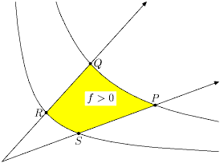
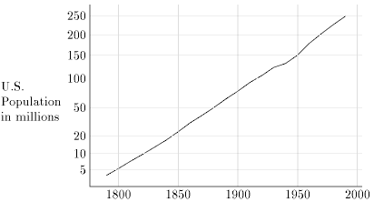

[Hobby89a] John D. Hobby, A METAFONT-like System with PostScript Output, Tugboat, the TeX User's Group Newsletter, 10(4), 1989.
The MetaPost system implements a language very much like METAFONT except that the output is expressed with cubic splines and PostScript commands rather than in METAFONT's raster-oriented Generic Font Format. It is a powerful language for expressing figures for documents printed on PostScript printers, and it can also be used for creating PostScript fonts.
The data types are mostly the same as in METAFONT, except that pictures represent a continuous version of what is scan-converted in order to create METAFONT's pictures. Some raster-oriented METAFONT primitives are removed and primitives for expressing PostScript concepts are added. Facilities are also included for adding text to pictures. This should make it convenient for figures to include labels that match the typography of the rest of the document.
[Hobby92] John D. Hobby, A User's manual for MetaPost, AT&T Bell Laboratories Computing Science Technical Report 162, 1992.

The MetaPost system implements a picture-drawing language very much like Knuth's METAFONT except that it outputs PostScript commands instead of run-length-encoded bitmaps. MetaPost is a powerful language for producing figures for documents to be printed on PostScript printers. It provides easy access to all the features of PostScript and it includes facilities for integrating text and graphics.
This document serves as an introductory user's manual. It does not require knowledge of METAFONT or access to The METAFONTbook, but both are beneficial. An appendix explains the differences between MetaPost and METAFONT.
Some recently-added features of the languages are documented only in a separate report. See below
[Hobby92a] John D. Hobby, Introduction to MetaPost, Proceedings of EuroTeX '92, 1992.
MetaPost is a picture-drawing language very much like METAFONT except with PostScript output. The language provides access to all major features of Level 1 PostScript® and it has facilities for integrating graphics with typeset text.
This paper gives a brief overview of the MetaPost language and how it can be used. A few of the more interesting features are described in detail.
[Hobby93b] John D. Hobby, Drawing Graphs with MetaPost, AT&T Bell Laboratories Computing Science Technical Report 164, 1992.

This paper describes a graph-drawing package that has been implemented as an extension to the MetaPost graphics language. MetaPost has a powerful macro facility for implementing such extensions. There are also some new language features that support the graph macros. Existing features for generating and manipulating pictures allow the user to do things that would be difficult to achieve in a stand-alone graph package.